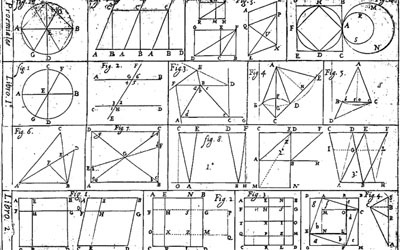
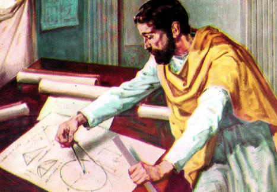
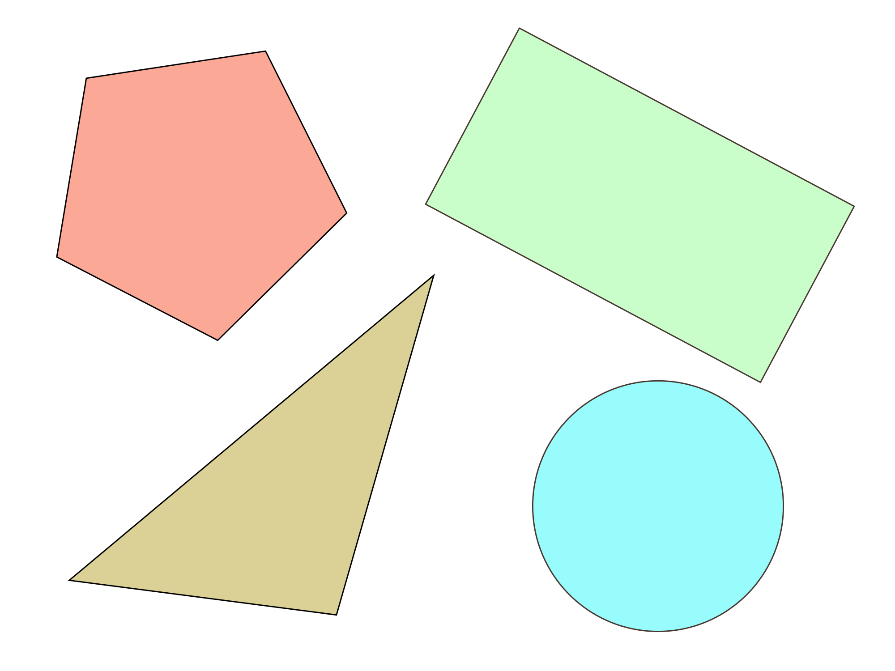
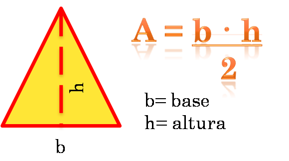

La geometria plana trata de aquellos elementos que solo tienen dos dimensiones y, por lo tanto, se encuentran y operan en un plano. Los elementos básicos con los que se suele trabajar en geometría plana, son el punto, la recta, la circunferencia y otras curvas. La geometria plana se divide en varios temas que nos ayudan a estudiarla. Es la rama de la geometria elemental que estudia las propiedade de superficies y figuras planas, como el triangulo o el circulo. Esta parte de la geometria tambien se conoce como geometria euclidea, en honor al matematico griego Euclides, el primero en estudiarla en el siglo IV a.C. Su extenso tratado Elemntos de geomotría se mantuvo como texto autorizado de geometria hasta la aparicion de las llamadas Gemotria no euclideas el siglo XIX.
HISTORIA
La observacion de la naturaleza nos muestra la existencia de varias formas en los cuerpos materiales que la componen y nos proporciona la idea de volumen, superficie, linea y punto. Por necesidades practicas, el desarrollo de tecnicas usadas para medir, construir o desplazarse, llevaron al hombre a hacer uso de las diversas propiedades de las figuras geometricas.
Geometria Euclidiana o Geometria plana se deriva de la palabra griega geometria (eletqia), que significa medida de la tierra. La palabra fue usada por el historiador griego Herodoto en el siglo V a.C. en su gran epica sobre las guerras persas en donde escribe que en el antiguo Egipto fue usada "geometria" para encontrar la distribucion adecuada de la tierra despues de los desbordamientos anuales del Nilo.La geometria como un marco de trabajo para la descripcion y medida de las figuras fue desarrollada empiricamente en muchas culturas hace varios miles de años. La geometria como una ciencia que compila una coleccion de proposiciones abstractas acerca de formas ideales y pruebas de estas proposiciones, fue fundada alrededor de los 600 a los a.C. en la cultura Griega por Thales, quien de acuerdo a la leyenda propuso varios teoremas en geometria. En el siglo VI a.C., la famosa escuela de los pitagoricos tambien debe ser mencionada con relacion a esto. Desde aquel periodo temprano debemos, sin embargo, señalar en particular a Eudoxio (alrededor del 391- 338 a.C.), quien es conocido por una teoria de las proporciones y el llamado metodo de exhaustion, aportaciones que hicieron posible determinar Areas y volumenes rigurosamente. En primer lugar la geometria clasica Griega ha sobrevivido a traves de los famosos trece libros escritos por Euclides alrededor de 300 a.C. conocidos como los Elementos de Euclides.

Elementos de Euclides
Euclides
(330 a.C. - 275 a.C.) Matematico griego. Junto con Arquimedes y Apolonio de Perga, posteriores a ellos, Euclides fue pronto incluido en la triada de los grandes matematíticos de la Antiguedad. Sin embargo, a la luz de la inmensa influencia que su obra ejerceria a lo largo de la historia, hay que considerarlo tambien como uno de los mas ilustres de todos los tiempos.
Pese a que realizo aportaciones y correcciones de relieve, Euclides ha sido visto a veces como un mero compilador del saber matematítico griego. En realidad, el gran merito de Euclides reside en su labor de sistematizacion: partiendo de una serie de definiciones, postulados y axiomas, establecio por rigurosa deduccion logica todo el armonioso edificio de la geometria griega. Juzgada no sin motivo como uno de los mas altos productos de la razon humana y admirada como un sistema acabado y perfecto, la geometria euclidiana mantendria su vigencia durante mas de veinte siglos, hasta la aparicion, ya en el siglo XIX, de las llamadas geometrias no euclidianas.

Pintura de Euclides
LÍNEA
Una línea es una sucesión continua de infinitos puntos. En una figura geometrica sólo tiene una dimensión: longitud. Cada línea tiene dos sentidos y una dirección.
Tipos de Lineas
Puede ser de varios tipos: En el plano (dos dimensiones)
Una sucesion continua de puntos contenidos en un plano, aunque siga cualquier criterio, se denomina línea. Puede ser:
Linea Recta:
La sucesion continua de puntos en una misma dirección.
Linea Curva:
de formas redondeadas, con uno o varios centros de curvatura.
Linea Transversal:
que atraviesa o cruza a otra
Linea perpendicular:
la que forma un angulo recto con otra.
Linea quebrada o poligonal:
formada por segmentos rectos consecutivos no alineados, presentando puntos angulosos.
poligonal abierta:
si no estan unidos el primero y el ultimo segmentos
poligonal cerrada:
si cada segmento está unido a otros dos.
Linea mixta:
una combinacion de una linea recta y una curva.
ANGULO
Un angulo es la parte del plano comprendida entre dos semirrectas que tienen el mismo punto de origen. Suelen medirse en unidades tales como el radian, el grado sexagesimal, el grado centesimal.
Clasificación de los ángulos
Los angulos, de acuerdo con su amplitud, reciben estas denominaciones:
Angulos nulo:
Es el angulo formado por dos semirrectas coincidentes, por lo tanto su abertura es nula, o sea de 0°.
Angulo agudo:
Es el angulo formado por dos semirrectas con amplitud mayor de 0 rad y menor de rad, Es decir, mayor de 0° y menor de 90° (grados sexagesimales), o menor de 100g (grados centesimales)
Angulo recto:
Un angulo recto es de amplitud igual a rad, es equivalente a 90° sexagesimales los dos lados de un angulo recto son perpendiculares entre si. La proyeccion ortogonal de un sobre otro es un punto, que coincide con el vertice
Angulo obtuso:
es aquel cuya amplitud es mayor a rad y menor a rad Mayor a 90° y menor a 180° sexagesimales.
Angulo llano:
El angulo llano tiene una amplitud de rad equivalente a 180° sexagesimales.
Angulo completo:
tiene una amplitud de rad Equivalente a 360° sexagesimales.
FIGURAS GEOMÉTRICAS
Una figura geometrica es un conjunto cuyo elementos son puntos. Las figuras geometricas más elementales son el punto, la recta y el plano. Mediante transformaciones y desplazamientos de sus componentes generan diversas lineas, superficies y volumenes.

Algunas figuras geometricas
EL AREA
El area es una medida de la extension de una superficie, expresada en unidades de medida denominadas superficiales. Para superficies planas de lados rectos puede triangularse y se puede calcular su area como suma de las areas de dichos triangulos. Ocasionalmente se usa el termino "area" como sinonimo de superficie, cuando no existe confusion entre el concepto geometrico en si mismo y la magnitud metrica asociada al concepto geometrico.

Hallando el area
El VOLUMEN
El volumen es una magnitud escalar definida como el espacio ocupado por un cuerpo. Es una funcion derivada ya que se halla multiplicando las tres dimensiones